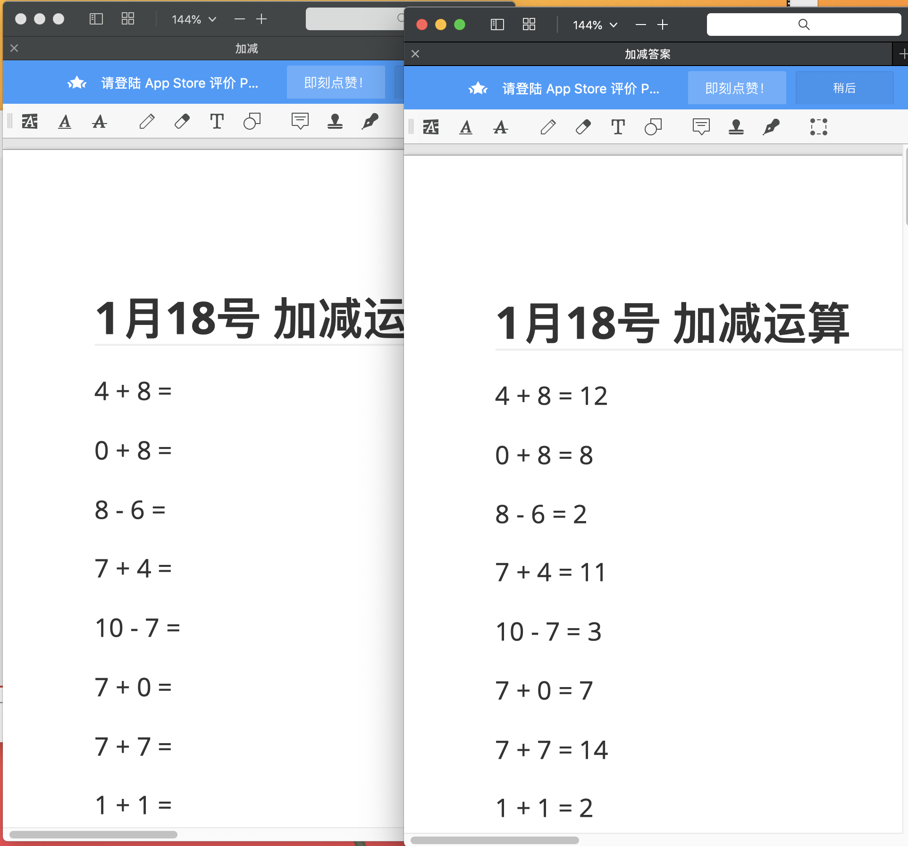

接到大姐任务，要每天给小外甥出10以内的加减法习题。我寻思了下，还是写代码生成测试习题方便。
为了自己偷懒，把习题和答案都生成，做完了让娃自己检查，我只检查他有没有做题就行了^_^
import random
from datetime import datetime
#加、减模板
add_formula = '{a} + {b} = {c}'
sub_formula = '{a} - {b} = {c}'
formulas = set()
for i in range(50):
a=random.randint(0, 10)
b=random.randint(0, 10)
formulas.add(add_formula.format(a=a, b=b, c=a+b))
if a>=b:
#小外甥这个岁数没有负数的概念，需要满足a>=b的减法
formulas.add(sub_formula.format(a=a, b=b, c=a-b))
#习题去重且有序，方便做题后自己检查对错
formulas = list(formulas)
#保存到加减md中，方便导出pdf
month = datetime.today().month
day = datetime.today().day
with open('加减.md', 'w', encoding='utf-8') as f:
f.write('## {month}月{day}号 加减运算\n'.format(month=month, day=day))
for fm in formulas:
f.write(fm.split('= ')[0] + ' =\n\n\n')
with open('加减答案.md', 'w', encoding='utf-8') as f:
f.write('## {month}月{day}号 加减运算\n'.format(month=month, day=day))
for fm in formulas:
f.write(fm + '\n\n')

然后共享到ipad内，刚刚开心了半个小时，小外甥做了10道题不到，我的pencil二代就完犊子了~~~~~